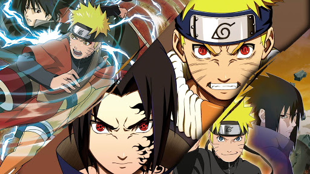

About Naruto
Uzumaki Naruto is a fictional character in the manga and anime franchise Naruto, created by Masashi Kishimoto. He is a young ninja from the fictional village of Konohagakure. His carefree, optimistic and boisterous personality enables him to befriend other Konohagakure ninja, as well as ninja from other villages.
Naruto and his friends
Naruto's Characteristics
- As a child, he wanted to be in the limelight, because he was alone, without any parents.
- Later he got some friends
- He become really popular and had a big power
- Be become Hokage, the leader of his village and its territory
Naruto's Friends
Naruto has some awsome friends. I think his best friend is Uchiha Sasuke, despite of Sasuke is really unfirendly with him and they have lots of conflicts. Click on the list below to read more aout them: